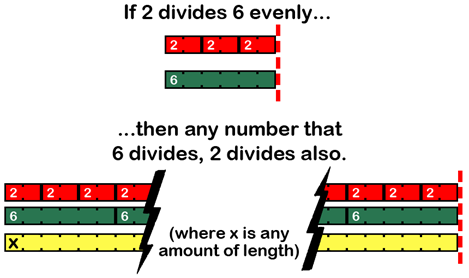

Topics Covered In This Chapter:
· Prime and Composite Numbers
· The Sieve of Eratosthenes
· The Rabin-Miller Primality Test
“Mathematicians have tried in vain to this day to discover some order in the sequence of prime numbers, and we have reason to believe that it is a mystery into which the human mind will never penetrate.”
Leonhard Euler, 18th century mathematician
All of the ciphers described in this book so far have been around for hundreds of years, and all of them (with the exception of the one-time pad) are easily broken by computers. These ciphers worked very well when hackers had to rely on pencil and paper to hack them, but computers can now manipulate data trillions of times faster than a person with a pencil.
The RSA cipher has several improvements over these old ciphers, and it will be detailed in the next chapter. However, the RSA cipher will require us to learn about prime numbers first.
A prime number is an integer (that is, a whole number) that is greater than 1 and has only two factors: 1 and itself. Remember that the factors of a number are the numbers that can be multiplied to equal the original number. The numbers 3 and 7 are factors of 21. The number 12 has factors 2 and 6, but also 3 and 4.
Every number has factors of 1 and itself. The numbers 1 and 21 are factors of 21. The numbers 1 and 12 are factors of 12. This is because 1 times any number will always be that same number. But if no other factors exist for that number, then that number is prime.
Here’s a list of prime numbers (note that 1 is not considered a prime number):
2, 3, 5, 7, 11, 13, 17, 19, 23, 29, 31, 37, 41, 43, 47, 53, 59, 61, 67, 71, 73, 79, 83, 89, 97, 101, 103, 107, 109, 113, 127, 131, 137, 139, 149, 151, 157, 163, 167, 173, 179, 181, 191, 193, 197, 199, 211, 223, 227, 229, 233, 239, 241, 251, 257, 263, 269, 271, 277, 281 …and so on, FOREVER.
There are an infinite number of prime numbers. This means there is no “largest” prime. They just keep getting bigger and bigger, just like regular numbers do. (See http://invpy.com/infiniteprimes for a proof of this.) The RSA cipher makes use of very large prime numbers in the keys it uses. Because of this, there will be far too many keys to brute-force through.
A googol is the number that has a one with a hundred zeros behind it:
10,000,000,000,000,000,000,000,000,000,000,000,000,000,000,000,000,000,000,000,000,000,000,000,000,000,000,000,000,000,000,000,000,000
(As a bit of history: the name of the search engine company Google came from misspelling “googol”, but they decided they liked that spelling better and kept it.)
A billion billion billion googols has twenty-seven more zeros than a googol:
10,000,000,000,000,000,000,000,000,000,000,000,000,000,000,000,000,000,000,000,000,000,000,000,000,000,000,000,000,000,000,000,000,000,000,000,000,000,000,000,000,000,000
But these are tiny numbers. A typical prime number used in our RSA program will have hundreds of digits:
112,829,754,900,439,506,175,719,191,782,841,802,172,556,768,253,593,054,977,186,2355,84,979,780,304,652,423,405,148,425,447,063,090,165,759,070,742,102,132,335,103,295,947,000,718,386,333,756,395,799,633,478,227,612,244,071,875,721,006,813,307,628,061,280,861,610,153,485,352,017,238,548,269,452,852,733,818,231,045,171,038,838,387,845,888,589,411,762,622,041,204,120,706,150,518,465,720,862,068,595,814,264,819
The above number is so big, I’m going to guess you didn’t even read it to notice the typo in it.
Integers that are not prime numbers are called composite numbers, because they are composed of at least two factors besides 1 and the number itself. They are called composite numbers because these number are composed of prime numbers multiplied together, such as the composite number 1,386 being composed of the prime numbers in 2 × 3 × 3 × 7 × 11.
Here are four facts about prime numbers:
1. Prime numbers are integers greater than 1that have only 1 and themselves as factors.
2. Two is the only even prime number. (Though I guess that makes two a very odd prime number.)
3. There are an infinite number of prime numbers. There is no “largest prime number”.
4. Multiplying two prime numbers will give a number that only has two pairs of factors, 1 and itself (like all numbers do), and the two prime numbers that were multiplied. For example, 3 and 7 are prime numbers. 3 times 7 is 21. The only factors for 21 are 1, 21, 3, and 7.
First we will create a module that has functions related to prime numbers:
· isPrime() will return either True or False if the number passed to it is prime or not. It will use the “divides test” algorithm.
· primeSieve() will use the “Sieve of Eratosthenes” algorithm (explained later) to generate numbers.
Like cryptomath.py, the primeSieve.py program is only meant to be imported as a module to our other programs. It does not do anything when run on its own.
Open a new file editor window by clicking on File ► New Window. Type in the following code into the file editor, and then save it as primeSieve.py.
Source code for primeSieve.py
1. # Prime Number Sieve
2. # http://inventwithpython.com/hacking (BSD Licensed)
3.
4. import math
5.
6.
7. def isPrime(num):
8. # Returns True if num is a prime number, otherwise False.
9.
10. # Note: Generally, isPrime() is slower than primeSieve().
11.
12. # all numbers less than 2 are not prime
13. if num < 2:
14. return False
15.
16. # see if num is divisible by any number up to the square root of num
17. for i in range(2, int(math.sqrt(num)) + 1):
18. if num % i == 0:
19. return False
20. return True
21.
22.
23. def primeSieve(sieveSize):
24. # Returns a list of prime numbers calculated using
25. # the Sieve of Eratosthenes algorithm.
26.
27. sieve = [True] * sieveSize
28. sieve[0] = False # zero and one are not prime numbers
29. sieve[1] = False
30.
31. # create the sieve
32. for i in range(2, int(math.sqrt(sieveSize)) + 1):
33. pointer = i * 2
34. while pointer < sieveSize:
35. sieve[pointer] = False
36. pointer += i
37.
38. # compile the list of primes
39. primes = []
40. for i in range(sieveSize):
41. if sieve[i] == True:
42. primes.append(i)
43.
44. return primes
primeSieve.py
1. # Prime Number Sieve
2. # http://inventwithpython.com/hacking (BSD Licensed)
3.
4. import math
The only module primeSieve.py needs is the math module.
primeSieve.py
7. def isPrime(num):
8. # Returns True if num is a prime number, otherwise False.
9.
10. # Note: Generally, isPrime() is slower than primeSieve().
11.
12. # all numbers less than 2 are not prime
13. if num < 2:
14. return False
We will program the isPrime() function to return False if the num parameter is a composite number and True if the num parameter is a prime number. If num is less than 2 we know it is not prime and can simply return False.
primeSieve.py
16. # see if num is divisible by any number up to the square root of num
17. for i in range(2, int(math.sqrt(num)) + 1):
18. if num % i == 0:
19. return False
20. return True
A prime number has no factors besides 1 and itself. So to find out if a given number is prime or not, we just have to keep dividing it by integers and see if any of them evenly divide the number with 0 remainder.
The math.sqrt() function will return a float value of the square root of the number it is passed. The square root of a number can be multiplied by itself to get the number. For example, the square root of 49 is 7, because 7 × 7 is 49.
For example, to find out if 49 is prime, divide it by the integers starting with 2:
49 ÷ 2 = 24 remainder 1
49 ÷ 3 = 16 remainder 1
49 ÷ 4 = 12 remainder 1
49 ÷ 5 = 9 remainder 4
49 ÷ 6 = 8 remainder 1
49 ÷ 7 = 7 remainder 0
Actually, you only need to divide the number by prime numbers. For example, there’s no reason to see if 6 divides 49, because if it did then 2 would have divided 49 since 2 is a factor of 6. Any number that 6 divides evenly can also be divided by 2 evenly:

Figure 23-1. 2 divides 6, and 6 divides X, therefore 2 divides X.
Because there’s an integer (that is not 1 or 49) that evenly divides 49 (that is, has a remainder of 0), we know that 49 is not a prime number. For another example, let’s try 13:
13 ÷ 2 = 6 remainder 1
13 ÷ 3 = 4 remainder 1
13 ÷ 4 = 3 remainder 1
No integer divides 13 with a remainder of 0 (except for 1 and 13, which don’t count). Actually, we don’t even have to divide all the numbers up to 13. We only have to test the integers up to (and including) the square root of the number we are testing for primality. The square root of a number is the number that is multiplied by itself to get that first number. The square root of 25 is 5, because 5 × 5 = 25. The square root of 13 is about 3.6055512754639, because 3.6055512754639 × 3.6055512754639 = 13. This means that when we were testing 13 for primality, we only had to divide 2 and 3 because 4 is larger than the square root of 13.
Line 18 checks if the remainder of division is 0 by using the % mod operator. If line 17’s for loop never returns False, the function will return True on line 20.
The sieve of Eratosthenes (pronounced “era, taws, thuh, knees”) is an algorithm for calculating prime numbers. Imagine a bunch of boxes for each integer, all marked “prime”:
Table 23-1. A blank sieve of Eratosthenes, with each number marked as “prime”.
|
Prime 1 |
Prime 2 |
Prime 3 |
Prime 4 |
Prime 5 |
Prime 6 |
Prime 7 |
Prime 8 |
Prime 9 |
Prime 10 |
|
Prime 11 |
Prime 12 |
Prime 13 |
Prime 14 |
Prime 15 |
Prime 16 |
Prime 17 |
Prime 18 |
Prime 19 |
Prime 20 |
|
Prime 21 |
Prime 22 |
Prime 23 |
Prime 24 |
Prime 25 |
Prime 26 |
Prime 27 |
Prime 28 |
Prime 29 |
Prime 30 |
|
Prime 31 |
Prime 32 |
Prime 33 |
Prime 34 |
Prime 35 |
Prime 36 |
Prime 37 |
Prime 38 |
Prime 39 |
Prime 40 |
|
Prime 41 |
Prime 42 |
Prime 43 |
Prime 44 |
Prime 45 |
Prime 46 |
Prime 47 |
Prime 48 |
Prime 49 |
Prime 50 |
Mark 1 as “Not Prime” (since one is never prime). Then mark all the multiples of two (except for two itself) as “Not Prime”. This means we will mark the integers 4 (2 × 2), 6 (2 × 3), 8 (2 × 4), 10, 12, and so on up to 50 (the largest number we have) are all marked as “Not Prime”:
Table 23-2. The sieve with one and the multiples of 2 (except 2 itself) marked as “not prime”.
|
Not Prime 1 |
Prime 2 |
Prime 3 |
Not Prime 4 |
Prime 5 |
Not Prime 6 |
Prime 7 |
Not Prime 8 |
Prime 9 |
Not Prime 10 |
|
Prime 11 |
Not Prime 12 |
Prime 13 |
Not Prime 14 |
Prime 15 |
Not Prime 16 |
Prime 17 |
Not Prime 18 |
Prime 19 |
Not Prime 20 |
|
Prime 21 |
Not Prime 22 |
Prime 23 |
Not Prime 24 |
Prime 25 |
Not Prime 26 |
Prime 27 |
Not Prime 28 |
Prime 29 |
Not Prime 30 |
|
Prime 31 |
Not Prime 32 |
Prime 33 |
Not Prime 34 |
Prime 35 |
Not Prime 36 |
Prime 37 |
Not Prime 38 |
Prime 39 |
Not Prime 40 |
|
Prime 41 |
Not Prime 42 |
Prime 43 |
Not Prime 44 |
Prime 45 |
Not Prime 46 |
Prime 47 |
Not Prime 48 |
Prime 49 |
Not Prime 50 |
Then repeat this with all the multiples of three, except for three itself: 6, 9, 12, 15, 18, 21, and so on are all marked “Not Prime”. Then do this for all of the multiples of four (except for four itself), and all of the multiples of five (except for five itself), up until eight. We stop at 8 because it is larger than 7.071, the square root of 50). We can do this because all the multiples of 9, 10, 11, and so on will already have been marked.
The completed sieve looks like this:
Table 23-3. A completed sieve of Eratosthenes.
|
Not Prime 1 |
Prime 2 |
Prime 3 |
Not Prime 4 |
Prime 5 |
Not Prime 6 |
Prime 7 |
Not Prime 8 |
Not Prime 9 |
Not Prime 10 |
|
Prime 11 |
Not Prime 12 |
Prime 13 |
Not Prime 14 |
Not Prime 15 |
Not Prime 16 |
Prime 17 |
Not Prime 18 |
Prime 19 |
Not Prime 20 |
|
Not Prime 21 |
Not Prime 22 |
Prime 23 |
Not Prime 24 |
Not Prime 25 |
Not Prime 26 |
Not Prime 27 |
Not Prime 28 |
Prime 29 |
Not Prime 30 |
|
Prime 31 |
Not Prime 32 |
Not Prime 33 |
Not Prime 34 |
Not Prime 35 |
Not Prime 36 |
Prime 37 |
Not Prime 38 |
Not Prime 39 |
Not Prime 40 |
|
Prime 41 |
Not Prime 42 |
Prime 43 |
Not Prime 44 |
Not Prime 45 |
Not Prime 46 |
Prime 47 |
Not Prime 48 |
Not Prime 49 |
Not Prime 50 |
By using the sieve of Erastothenes, we’ve calculated that the prime numbers under 50 are 2, 3, 5, 7, 11, 13, 17, 19, 23, 29, 31, 37, 41, 43, and 47. This sieve algorithm is good when we want to quickly find out all the prime numbers in a certain range of numbers. It is much faster than using the previous “divides test” algorithm to test if 2 is prime, then test if 3 is prime, then test if 4 is prime, and so on.
23. def primeSieve(sieveSize):
24. # Returns a list of prime numbers calculated using
25. # the Sieve of Eratosthenes algorithm.
26.
27. sieve = [True] * sieveSize
28. sieve[0] = False # zero and one are not prime numbers
29. sieve[1] = False
The primeSieve() function returns a list of all prime numbers between 1 and sieveSize. First, line 27 creates a list of Boolean True values that is the length of sieveSize. The 0 and 1 indexes are marked as False because 0 and 1 are not prime numbers.
31. # create the sieve
32. for i in range(2, int(math.sqrt(sieveSize)) + 1):
33. pointer = i * 2
34. while pointer < sieveSize:
35. sieve[pointer] = False
36. pointer += i
The for loop on line 32 goes through each integer from 2 up to the square root of sieveSize. The variable pointer will start at the first multiple of i after i (which will be i * 2). Then the while loop will set the pointer index in the sieve list to False, and line 36 will change pointer to point to the next multiple of i.
38. # compile the list of primes
39. primes = []
40. for i in range(sieveSize):
41. if sieve[i] == True:
42. primes.append(i)
After the for loop on line 32 completes, the sieve list will contain True for each index that is a prime number. We can create a new list (which starts as an empty list in primes) and loop over the entire sieve list, and appends and numbers if sieve[i] is True (meaning i is prime).
44. return primes
The list of prime numbers is returned on line 44.
The isPrime() function in primeSieve.py checks if the number can be divided evenly by a range of numbers from 2 to the square root of the number. But what about a number like 1,070,595,206,942,983? If you pass this integer to isPrime(), it takes several seconds to determine if it is prime or not. And if the number is hundreds of digits long (like the prime numbers in next chapter’s RSA cipher program are), it would take over a trillion years to figure out if that one number is prime or not.
The isPrime() function in primeSieve.py is too slow for the large numbers we will use in the RSA cipher. Fortunately there is an algorithm called the Rabin-Miller Primality Test than can calculate if such large numbers are prime or not. We will create a new isPrime() function in rabinMiller.py that makes use of this better algorithm.
The code for this algorithm uses advanced mathematics, and how the algorithm works is beyond the scope of this book. Like the gcd() function in cryptomath.py, this book will just present the code for the algorithm for you to use without explanation.
Open a new file editor window and type in the following code. Save this file as rabinMiller.py. This program will be a module that is meant to be imported by other programs.
Instead of typing out the list of numbers on line 43, just temporarily add the lines import pyperclip and pyperclip.copy(primeSieve(1000)) in the primeSieve.py file and run it. This will copy the list of primes to the clipboard, and then you can paste it into the rabinMiller.py file.
Open a new file editor window by clicking on File ► New Window. Type in the following code into the file editor, and then save it as rabinMiller.py.
Source code for rabinMiller.py
1. # Primality Testing with the Rabin-Miller Algorithm
2. # http://inventwithpython.com/hacking (BSD Licensed)
3.
4. import random
5.
6.
7. def rabinMiller(num):
8. # Returns True if num is a prime number.
9.
10. s = num - 1
11. t = 0
12. while s % 2 == 0:
13. # keep halving s while it is even (and use t
14. # to count how many times we halve s)
15. s = s // 2
16. t += 1
17.
18. for trials in range(5): # try to falsify num's primality 5 times
19. a = random.randrange(2, num - 1)
20. v = pow(a, s, num)
21. if v != 1: # this test does not apply if v is 1.
22. i = 0
23. while v != (num - 1):
24. if i == t - 1:
25. return False
26. else:
27. i = i + 1
28. v = (v ** 2) % num
29. return True
30.
31.
32. def isPrime(num):
33. # Return True if num is a prime number. This function does a quicker
34. # prime number check before calling rabinMiller().
35.
36. if (num < 2):
37. return False # 0, 1, and negative numbers are not prime
38.
39. # About 1/3 of the time we can quickly determine if num is not prime
40. # by dividing by the first few dozen prime numbers. This is quicker
41. # than rabinMiller(), but unlike rabinMiller() is not guaranteed to
42. # prove that a number is prime.
43. lowPrimes = [2, 3, 5, 7, 11, 13, 17, 19, 23, 29, 31, 37, 41, 43, 47, 53, 59, 61, 67, 71, 73, 79, 83, 89, 97, 101, 103, 107, 109, 113, 127, 131, 137, 139, 149, 151, 157, 163, 167, 173, 179, 181, 191, 193, 197, 199, 211, 223, 227, 229, 233, 239, 241, 251, 257, 263, 269, 271, 277, 281, 283, 293, 307, 311, 313, 317, 331, 337, 347, 349, 353, 359, 367, 373, 379, 383, 389, 397, 401, 409, 419, 421, 431, 433, 439, 443, 449, 457, 461, 463, 467, 479, 487, 491, 499, 503, 509, 521, 523, 541, 547, 557, 563, 569, 571, 577, 587, 593, 599, 601, 607, 613, 617, 619, 631, 641, 643, 647, 653, 659, 661, 673, 677, 683, 691, 701, 709, 719, 727, 733, 739, 743, 751, 757, 761, 769, 773, 787, 797, 809, 811, 821, 823, 827, 829, 839, 853, 857, 859, 863, 877, 881, 883, 887, 907, 911, 919, 929, 937, 941, 947, 953, 967, 971, 977, 983, 991, 997]
44.
45. if num in lowPrimes:
46. return True
47.
48. # See if any of the low prime numbers can divide num
49. for prime in lowPrimes:
50. if (num % prime == 0):
51. return False
52.
53. # If all else fails, call rabinMiller() to determine if num is a prime.
54. return rabinMiller(num)
55.
56.
57. def generateLargePrime(keysize=1024):
58. # Return a random prime number of keysize bits in size.
59. while True:
60. num = random.randrange(2**(keysize-1), 2**(keysize))
61. if isPrime(num):
62. return num
If you run the interactive shell, you can import the rabinMiller.py module and call the functions in it. Try typing the following into the interactive shell:
>>> import rabinMiller
>>> rabinMiller.generateLargePrime()
122881168342211041030523683515443239007484290600701555369488271748378054744009463751312511471291011945732413378446666809140502037003673211052153493607681619990563076859566835016382556518967124921538212397036345815983641146000671635019637218348455544435908428400192565849620509600312468757953899553441648428119
>>> rabinMiller.isPrime(45943208739848451)
False
>>> rabinMiller.isPrime(13)
True
>>>
rabinMiller.py
1. # Primality Testing with the Rabin-Miller Algorithm
2. # http://inventwithpython.com/hacking (BSD Licensed)
3.
4. import random
The Rabin-Miller algorithm uses random numbers, so we import the random module on line 4.
rabinMiller.py
7. def rabinMiller(num):
8. # Returns True if num is a prime number.
9.
10. s = num - 1
11. t = 0
12. while s % 2 == 0:
13. # keep halving s while it is even (and use t
14. # to count how many times we halve s)
15. s = s // 2
16. t += 1
17.
18. for trials in range(5): # try to falsify num's primality 5 times
19. a = random.randrange(2, num - 1)
20. v = pow(a, s, num)
21. if v != 1: # this test does not apply if v is 1.
22. i = 0
23. while v != (num - 1):
24. if i == t - 1:
25. return False
26. else:
27. i = i + 1
28. v = (v ** 2) % num
29. return True
The mathematics of the Rabin-Miller Primality algorithm are beyond the scope of this book, so the code in this function will not be explained.
The Rabin-Miller algorithm is also not a surefire test for primality; however, you can be extremely certain that it is accurate. (Although this is not good enough for commercial encryption software, it is good enough for the purposes of the programs in this book.) The main benefit of the Rabin-Miller algorithm is that it is a relatively simple primality test and only takes a few seconds to run on a normal computer.
If rabinMiller() returns True, then the num argument is extremely likely to be prime. If rabinMiller() returns False, then num is definitely composite.
rabinMiller.py
32. def isPrime(num):
33. # Return True if num is a prime number. This function does a quicker
34. # prime number check before calling rabinMiller().
35.
36. if (num < 2):
37. return False # 0, 1, and negative numbers are not prime
All numbers that are less than two (such as one, zero, and negative numbers) are all not prime, so we can immediately return False.
rabinMiller.py
39. # About 1/3 of the time we can quickly determine if num is not prime
40. # by dividing by the first few dozen prime numbers. This is quicker
41. # than rabinMiller(), but unlike rabinMiller() is not guaranteed to
42. # prove that a number is prime.
43. lowPrimes = [2, 3, 5, 7, 11, 13, 17, 19, 23, 29, 31, 37, 41, 43, 47, 53, 59, 61, 67, 71, 73, 79, 83, 89, 97, 101, 103, 107, 109, 113, 127, 131, 137, 139, 149, 151, 157, 163, 167, 173, 179, 181, 191, 193, 197, 199, 211, 223, 227, 229, 233, 239, 241, 251, 257, 263, 269, 271, 277, 281, 283, 293, 307, 311, 313, 317, 331, 337, 347, 349, 353, 359, 367, 373, 379, 383, 389, 397, 401, 409, 419, 421, 431, 433, 439, 443, 449, 457, 461, 463, 467, 479, 487, 491, 499, 503, 509, 521, 523, 541, 547, 557, 563, 569, 571, 577, 587, 593, 599, 601, 607, 613, 617, 619, 631, 641, 643, 647, 653, 659, 661, 673, 677, 683, 691, 701, 709, 719, 727, 733, 739, 743, 751, 757, 761, 769, 773, 787, 797, 809, 811, 821, 823, 827, 829, 839, 853, 857, 859, 863, 877, 881, 883, 887, 907, 911, 919, 929, 937, 941, 947, 953, 967, 971, 977, 983, 991, 997]
44.
45. if num in lowPrimes:
46. return True
The numbers in the lowPrimes list are primes. (Duh.) We can immediately return True if num is in the lowPrimes list.
rabinMiller.py
48. # See if any of the low prime numbers can divide num
49. for prime in lowPrimes:
50. if (num % prime == 0):
51. return False
Line 49 loops through each of the prime numbers in the lowPrimes list. The integer in num is modded with the % mod operator by each prime number on line 50, and if this evaluates to 0 then we know that prime divides num and so num is not prime. In that case, line 51 returns False.
Checking if num is divisible by all the primes under 1000 won’t tell us if the number is prime, but it might tell us if the number is composite. About 30% of the random numbers that generateLargePrime() creates that are composite will be detected as composite by dividing by the low prime numbers. Dividing by the low prime numbers is much faster than executing the full Rabin-Miller algorithm on the number, so this shortcut can make our program execute much more quickly.
rabinMiller.py
53. # If all else fails, call rabinMiller() to determine if num is a prime.
54. return rabinMiller(num)
Those are all the quick tests to determine if a number is prime or not. But if num does not match any of those tests, then it is passed to the rabinMiller() function to check if it is prime or not. The return value of rabinMiller() will be returned by isPrime().
The comment on line 53 means call the rabinMiller() function to determine if the number is prime. Please do not call Dr. Rabin or Dr. Miller personally to ask them if your number is prime.
rabinMiller.py
57. def generateLargePrime(keysize=1024):
58. # Return a random prime number of keysize bits in size.
59. while True:
60. num = random.randrange(2**(keysize-1), 2**(keysize))
61. if isPrime(num):
62. return num
The generateLargePrime() function will return an integer that is prime. It does this by coming up with a large random number, storing it in num, and then passing num to isPrime(). The isPrime() function will then test to see if num is composite and then pass the num to rabinMiller() for a more thorough (and computationally expensive) primality test.
If the number num is prime, then line 62 returns num. Otherwise the infinite loop goes back to line 60 to try a new random number. This loop keeps trying over and over again until it finds a number that the isPrime() function says is prime.
Prime numbers have fascinating properties in mathematics. As you will learn in the next chapter, they are also the backbone of ciphers used in actual professional encryption software. The definition of a prime number is simple enough: a number that only has one and itself as factors. But determining which numbers are prime and which are composite (that is, not prime) takes some clever code.
Modding a number with all the numbers from two up to the square root of the number is how our isPrime() function determines if that number is prime or not. A prime number will never have a remainder of 0 when it is modded by any number (besides its factors, 1 and itself.) But this can take a while for the computer to calculate when testing large numbers for primality.
The sieve of Erastothenes can be used to quickly tell if a range of numbers is prime or not, but this requires a lot of memory.
The RSA cipher makes use of extremely large prime numbers that are hundreds of digits long. The Sieve of Erastothenes and the basic isPrime() function we have in primeSieve.py aren’t sophisticated enough to handle numbers this large.
The Rabin-Miller algorithm uses some mathematics which has simple code (but the mathematical reasoning behind it is too complex for this book), but it allows us to determine if a number that is hundreds of digits long is prime.
In the next chapter, we will use the prime number code we developed for the rabinMiller.py module in our RSA Cipher program. At last, we will have a cipher easier to use than the one-time pad cipher but that cannot be hacked by the simple hacker techniques in this book!